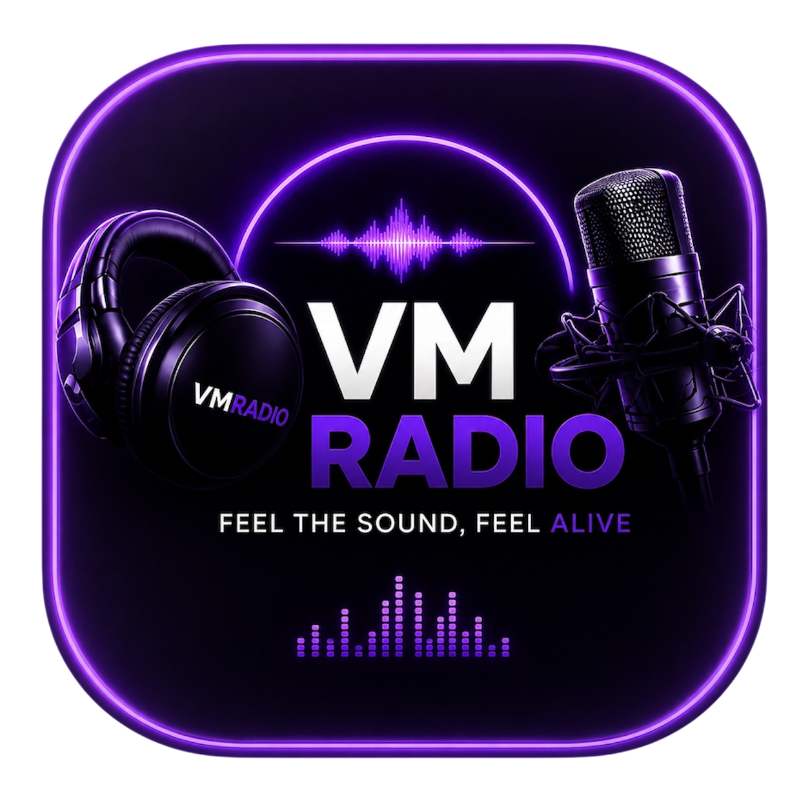

Téléchargerl'application
VM RADIO — votre radio, partout avec vous.
Après l'installation, ouvre VM RADIO depuis son icône : le popup de bienvenue et de fonctionnement de l'application s'affichera.

VM RADIO — votre radio, partout avec vous.
Après l'installation, ouvre VM RADIO depuis son icône : le popup de bienvenue et de fonctionnement de l'application s'affichera.